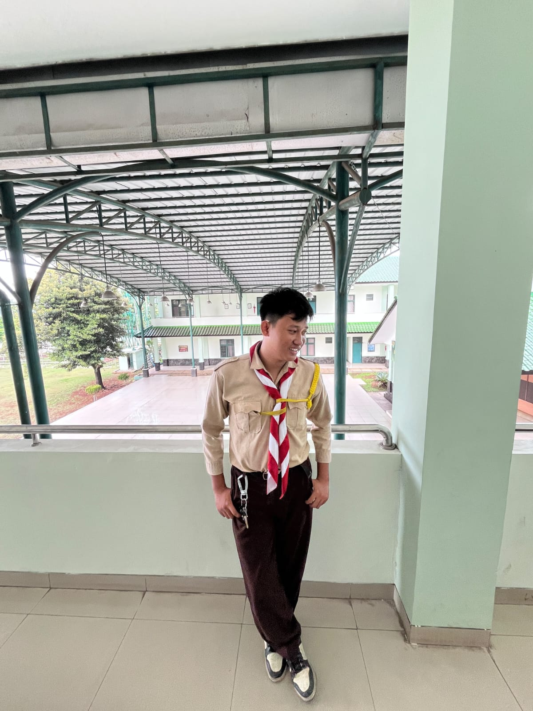

01 / NETWORKING
Jaringan komputer
Topologi, pengalamatan IP, routing, switching, dan pemecahan masalah konektivitas.
Halo, saya Levi — pelajar yang bersemangat mendalami jaringan komputer, administrasi server, dan keamanan siber secara bertanggung jawab.

Saya Levi, siswa yang menyukai cara kerja jaringan dan server di balik layanan digital. Saya terus mengembangkan kemampuan melalui praktik, eksplorasi teknologi, dan pembelajaran yang terarah.
Ketertarikan saya mencakup konfigurasi jaringan, pengelolaan server, Linux, serta pengujian keamanan pada sistem yang memang diizinkan.
Fondasi teknis untuk memahami, mengelola, dan membantu menjaga sistem digital.
Topologi, pengalamatan IP, routing, switching, dan pemecahan masalah konektivitas.
Dasar administrasi server, layanan jaringan, konfigurasi, dan pemantauan sistem.
Belajar mengenali risiko dan menguji keamanan hanya di lab atau dengan izin yang jelas.
Keamanan siber yang baik melindungi orang dan sistem. Semua latihan dilakukan secara legal, pada lingkungan sendiri, lab pembelajaran, atau dengan izin eksplisit.